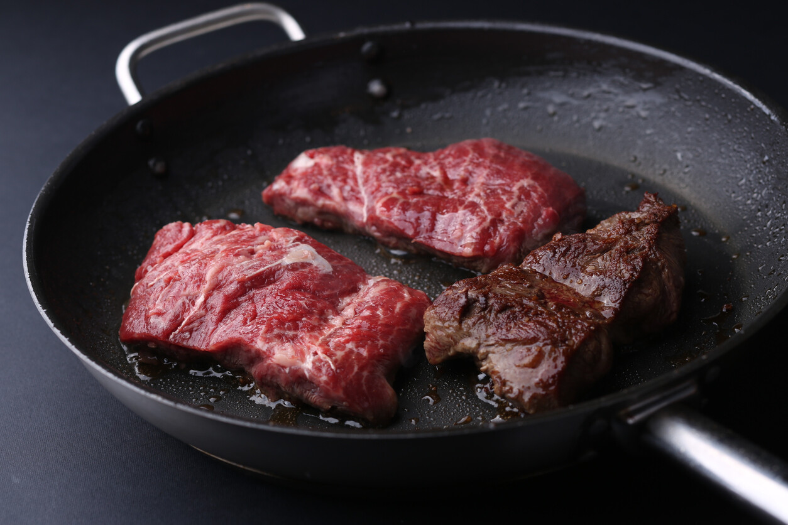
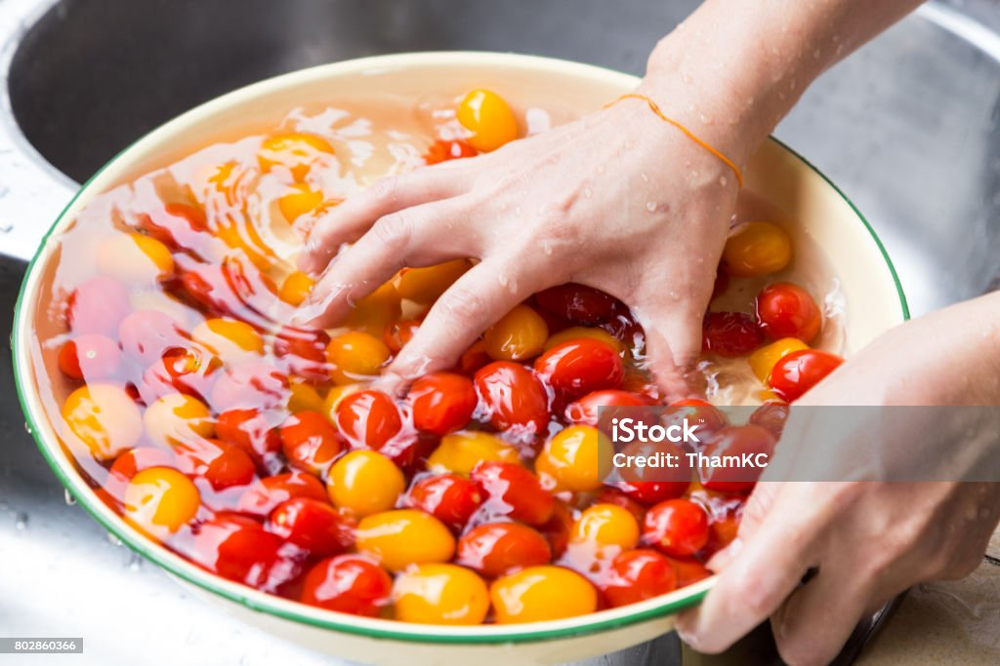

Volver al MENU
Bistec con ensalada

Ingredientes
Paso a Paso
Resultado Final
Ingredientes
- 1cucharadita de aceite de oliva
- 30gbistec sin grasa
- 1/2cebolla
- 4 hojas de lechuga
- cilantro
- limon
- mostaza
- Tomate cherry
- Vinagre
- Sal y pimienta
Paso a Paso
- Calienta un sartén antiadherente, luego coloca la carne.Cocina durante 4 minutos , luego voltea y continúa cocinando por el otro lado hasta obtener el término de tu preferencia

- Lava la verdura, luego corta la lechuga en trozos medianos, el tomate cherry por la mitad y la cebolla en tiras delgadas.

- Sirve todo en un plato, luego agrega cilantro y el bistec.
- Mezcla el aceite de oliva con 2 cucharaditas de vinagre balsámico, 1/2 cucharadita de mostaza y el jugo de 1/2 limón. Agrega una pizca de sal y pimienta y revuelve bien.
- Vierte la mezcla anterior encima de la ensalada.
Resultado Final
Volver al indice